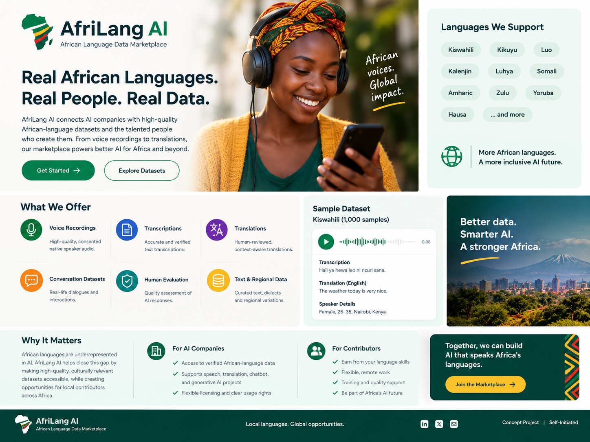

AfriLang AI is a self-initiated concept exploring a marketplace that connects AI companies with high-quality African-language datasets and the people who create them.

The concept was designed to make a complex AI-data marketplace understandable to both technical buyers and local language contributors.
A clear value proposition explaining why high-quality African-language data matters.
Separate messaging for AI companies seeking data and contributors providing language expertise.
A simple structure for services, datasets, contributors and future marketplace actions.
Content direction built around African languages, beginning with Kiswahili.
Consented native-speaker audio datasets.
Accurate and verified language transcriptions.
Human-reviewed translation datasets.
Real-world dialogue and interaction datasets.
Quality assessment of AI responses.
Text, dialect and regional-language variations.
A self-initiated concept project demonstrating content strategy, UX writing, research and AI-focused product communication.